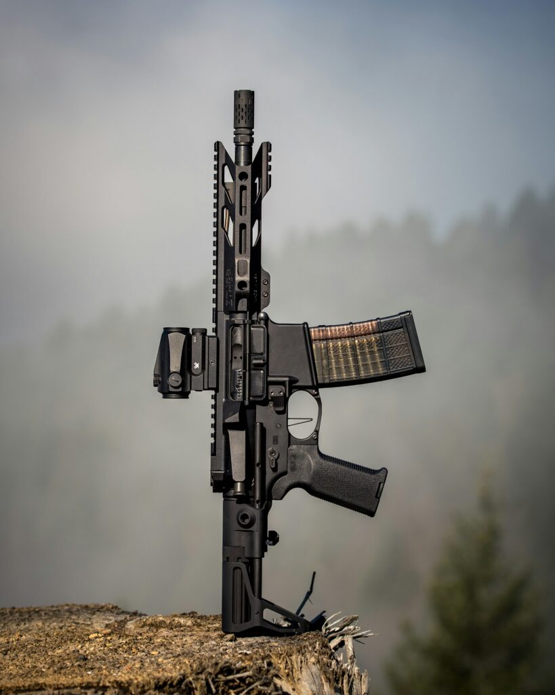
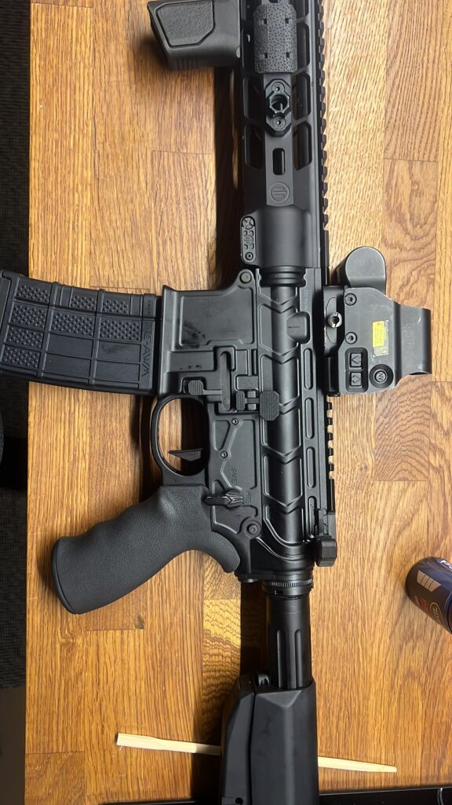
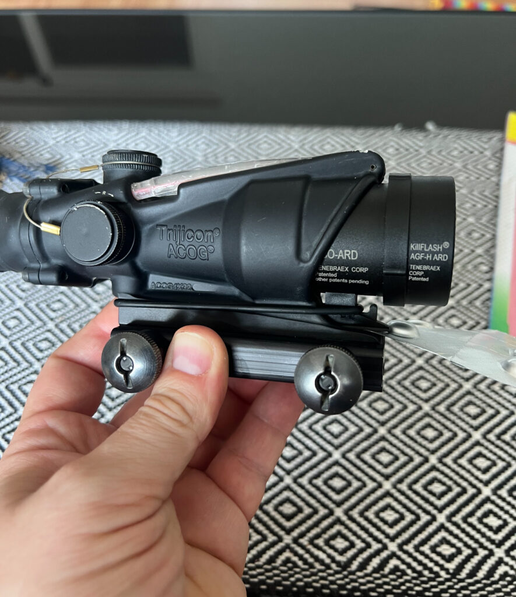
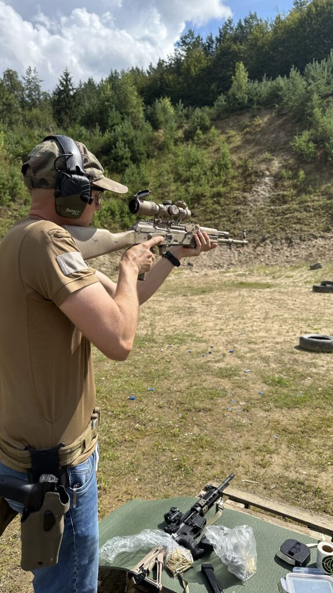
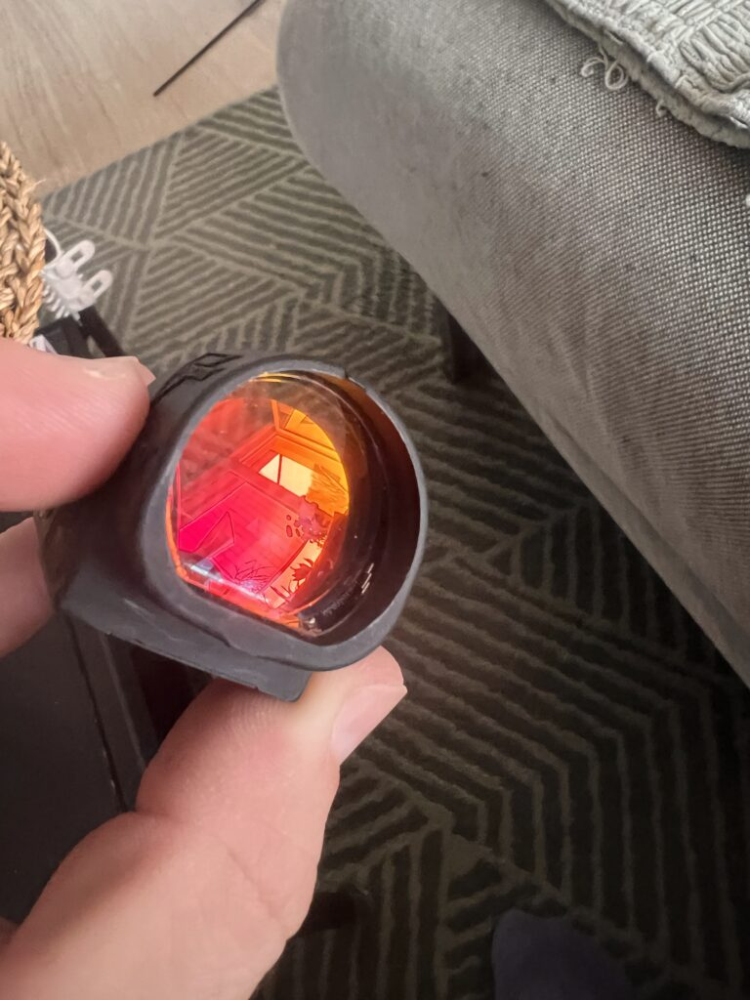
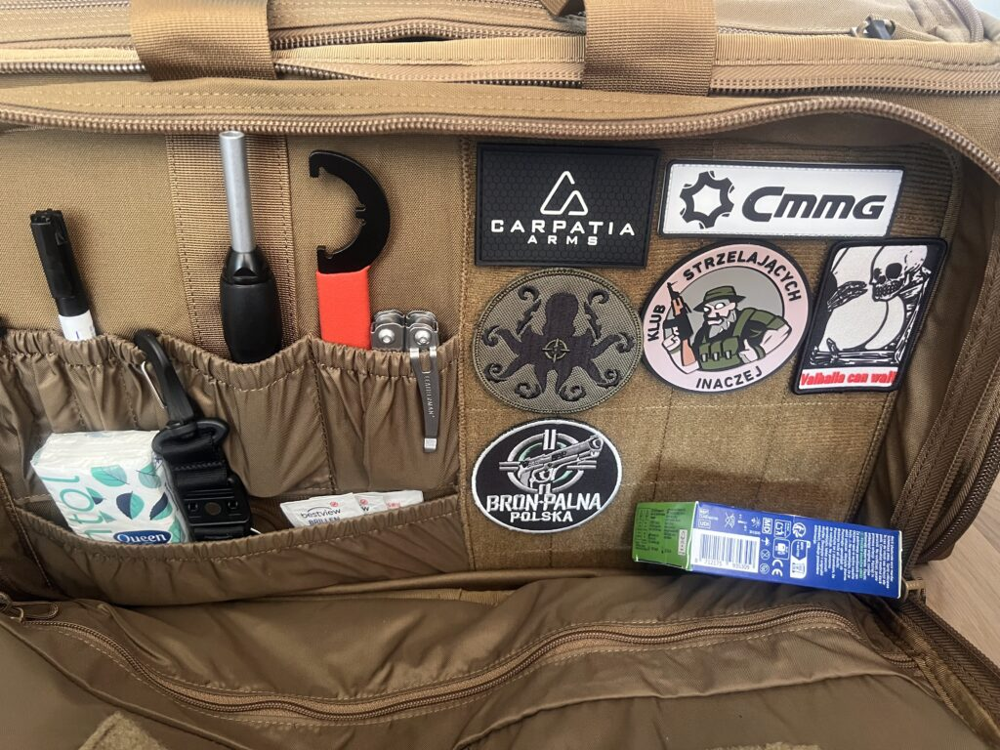
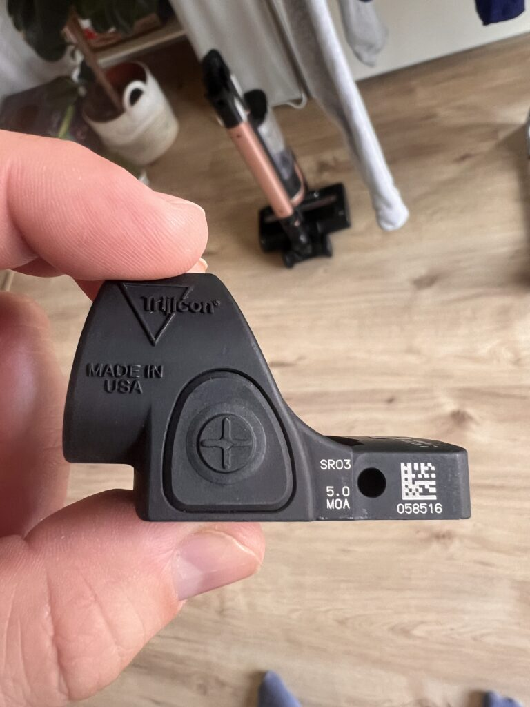
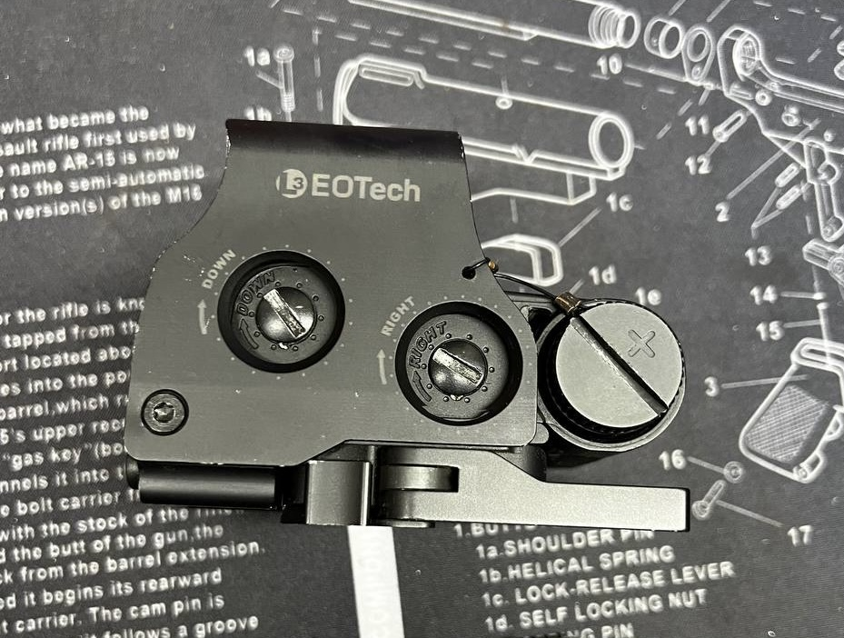
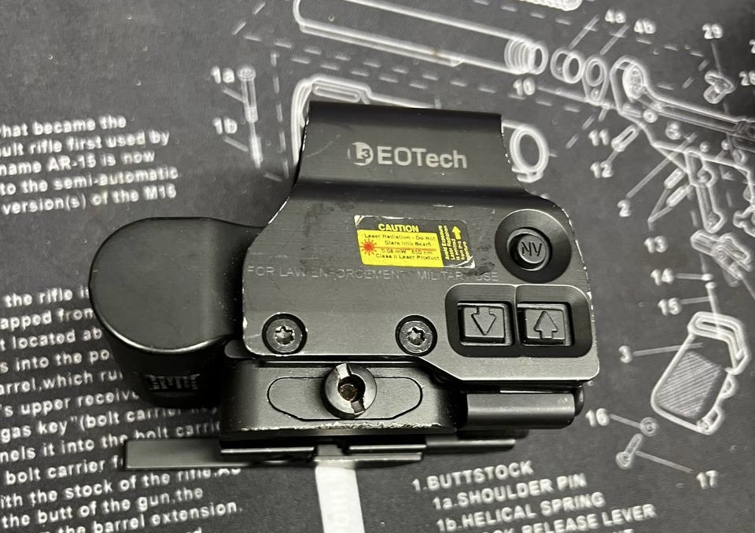

Optyka na AR-15: Kompletny przewodnik dla początkujących i nie tylko (2025)
2025-10-13
Temat wyboru optyki jest jak AR-15 – każdy znajdzie coś dla siebie, ale można
się bardzo łatwo zawieść. W tym poradniku pokażę, co naprawdę działa na karabinku –
bez katalogowych bajek, za to z radami prosto od chłopaków z grupy Broń Palna
Polska. Dostaniesz świeże ceny, patenty na wybór optyki, kilka strzeleckich
lifehacków i ostrzeżenia, żeby nie utopić kasy na czymś czego nie warto kupić.
To
nie poradnik dla kolekcjonerów skarbów i okazji, tylko praktyczne podpowiedzi tak,
jakbyśmy gadali na grupie czy treningu.

Ceny które tu pokazuje są takie jakie aktualnie znalazłem wiadomo, że można znaleźć lepsze ale i gorsze.
Lecimy!
Po co w ogóle inwestować w optykę?
Bo nawet na najlepszym AR-15 z mechanicznymi (przyrządy mechaniczne) nie przyśpieszysz tak mocno, jak z prostą, sprawdzoną optyką. Pozwala szybciej przejść na cel, działać w dynamicznym sporcie i dziurawić papier nawet na 300 m bez „mrużenia oka przez szparkę” no i wygląda się jak prawdziwy niedzielny komandos 🙂
A tak poważnie to bez optyki strzelanie na 300-500m jest bardzo ciężkie jeśli nie niemożliwe. Ale! Optyka to nie tylko moda i wygoda, tylko… zupełnie inny styl strzelania.
Kolimatory (red dot) – klasyka do AR-15
Dla
kogo?
Sport dynamiczny, taktyka, szybkie rekreacyjne strzelanie. Pozwalają
celować „obojgiem oczu”, są szybkie, niezawodne… ale nie dla każdego oka.
Astygmatyzm:
Kropka „rozjeżdża się” u niektórych na plamy, komety, duchy.
ZAWSZE starajcie się spojrzeć przez koli (np. u kolegi z osi) zanim postanowicie go kupić.
przykłady kolimatorów & ceny:
- Aimpoint PRO: 2100 zł nowy, 1300–1500 zł używany.
- Holosun 403B/503C/AEMS/510C: 850–1600 zł nowy, 600–1100 zł używka.
- Vortex Crossfire/StrikeFire: 750–1200 zł (solidny budżet).
- Primary Arms SLx Micro Dot: 900–1400 zł.
- Vector Optics (Frenzy, Maverick, Paragon): 350–650 zł (na grupie w dziale promocji macie kod rabatowy na tą optykę).
- Redwin: 350–600 zł (jak wyżej jest kod rabatowy dla wszystkich użytkowników grupy w dziale Promocji na naszym kanale).
- Holosun 510C: 1200–1600 zł nowy, 800–1100 zł używka.

Holograficzne (holo) – ostrość i wyraźne ziarno dla astygmatyka
Dla
kogo?
Idealne pod CQB, dynamiczny sport, służby, osoby z astygmatyzmem (z reguły
punkt/pierścień są tu wyraźniejsze niż w kolimatorze).
Top modele i ceny:
- EOTech EXPS3: 4300–5200 zł nowy, 2500–3500 zł używany (Ja przyznam się że swojego trafiłem u nas na grupie za 1/4 ceny nowego)
- Vortex UH-1 Gen II: 2900–3500 zł nowy, ok. 1900–2600 zł używany. (większa część naszego zespołu BPP używa właśnie tego holo i bardzo go chwali za gwarancję i jakość)
Tips:
- Obraz mniej wrażliwy na astygmatyzm.
- Lepiej współpracuje z powiększalnikiem (magnifier).
Pryzmatyczne (prism) – moc dla astygmatyka i uniwersalność
Czym się
wyróżniają?
Mała luneta o stałym powiększeniu (1x, 3x, 4x), z siatką wytrawioną
w szkle – zawsze ostra niezależnie od wzroku użytkownika.

Top modele i ceny:
-
Trijicon ACOG 4×32 (TA32RCO):
- Nowy: 4800–5700 zł (świat), 6200–7200 zł (PL, oficjalny sklep).
- Używany: 2000–4800 zł (USA, eBay, BPP), 4000–6500 zł (stan bdb)(sam mam ten celownik i naprawdę jak się przez niego spojrzy to widać, że to ACOG, pancerny, sprawdzony na wielu konfliktach na świecie ).
- Primary Arms SLx 3X Micro Prism: 1500–1800 zł nowy.
- Vortex Spitfire 3x: 1600–2100 zł nowy.
- Holosun HE515/HS507: 1600–2100 zł.
Tips:
Najlepszy wybór dla astygmatyka – wytrawiana siatka nie rozmywa się
nigdy.
LPVO (Low Power Variable Optic) – uniwersalność i precyzja
Co to jest?
Luneta o zmiennym powiększeniu (najczęściej 1–4x, 1–6x,
1–8x), idealna do celowania dynamicznie i precyzyjnie. Ten kto jej używa jest wolniejszy
na bliśkim dystansie w porównaniu do koli czy holo ale za to idealnie sprawdza się na
torach gdzie trzeba strzelać na dłuższe i bliższe dystanse na raz.

Modele i ceny:
- Vortex Strike Eagle 1-6x: 1900–2500 zł nowy, 1200–1700 zł używany.
- Primary Arms SLx 1-6x: 1800–2200 zł.
- Leupold VX-Freedom 1-4x: 2200–2600 zł.
- Są te tańsze odpowiedniki Vector Optics i Redwin macie na grupie kody zniżkowe BPP na ich zakup. Sam mam Vector Optics S1 i działa ok.
Tips:
Tu astygmatyzm nie ma znaczenia – siatka jest grawerowana.
Offset/mikro kolimatory (SRO/RMR/507C/509T) – boczne oko AR-15
Gdzie
warto?
Jako backup/offset (np. na 45°) do LPVO/pryzmatu albo w dynamicznym
strzelaniu PCC, nie jako główny celownik do karabinka AR-15



Top modele i ceny:
- Trijicon SRO: 2700–3200 zł nowy, ok. 2200 zł używka.
- Trijicon RMR: 1800–2300 zł nowy, 1300–1600 zł używka.
- Holosun 507C/509T: 1200–1700 zł nowy, 900–1300 zł używka.
- Praktycznie każdy kolimator z wiekszym oknem nada się na taki offset, napisałem o tych bo te modele mam i je znam 🙂
Wskazówka:
Offset sprawdza się genialnie z LPVO lub pryzmatem (połączenie
precyzji i klasycznej „kropki” na krótkim dystansie). Dla zawodnika dynamicznego – must have,
jak pisałem wyżej uniwersalność na torach z calami na bliższych i dalszych dystansach.
Sprawdźcie sobie zawody Lekka Piechota zrozumiecie o czym mówię.
Powiększalniki (Magnifier)
Do
czego?
Dodatek do koli/holo, pozwala zwiększyć zasięg w kilka sekund.
Top modele i ceny:
- EOTech G33 x3: 2100–2600 zł używany, 3800–4200 zł nowy.
- EOTech G45 x5
- EOTech G43 x3
- Vortex VMX-3T: 900–1200 zł.
Import, używki, podróbki – wiedza
Używki/Import:

- Amerykański rynek: optyka tańsza często o 40–60%. Są firmy, które pomogą ściągnąć wybraną optykę z USA, pytajcie na grupie.
- Polski rynek: lepiej kupić od grupowicza niż z nieznanego źródła.

- Ryzyko podróbek:
- Szczególnie EOTech, Trijicon – sprawdzajcie numery seryjne, dokumentację, stan optyki warto przez nią spojrzeć często widać, że obraz jest jak w HD, do każdej z tych firm da się napisać i poprosić o sprawdzenie numeru seryjnego , często jest nawet taka zakładka na stronie. Jeśli Trijicon w swojej wyszukiwarce nie podaje wyniku nie poddawajcie się napiszcie do nich często optyka która była wydana wojsku nie będzie w cywilnej bazie danych, oni to wam potwierdzą.
Szybka podpowiedź – co wybrać?
- Sport/IPSC: Klasyczny koli (Aimpoint, Holosun), LPVO, awaryjnie offset micro-koli.
- CQB/taktyka: Holo (EOTech, Vortex), powiększalnik do koli/holo.
- Astygmatyzm: Pryzmat (ACOG, Primary Arms, Vortex Spitfire), LPVO, wybrane holo.
- Budżet: Holosun, Vector Optics, Redwin – bezpieczny start nawet używane, do zabawy na strzelnicy tzw. popykania jak najbardziej.
Wskazówka:
Sprawdzajcie optykę kolegów na strzelnicy, nie bójcie się podejść
do kogoś kogo spotkacie na strzelnicy i zapytać o sprzęt, porównujcie „na żywo” – Twój wzrok
może różnić się od testów w Internecie. Używka z grupy to lepszy wybór niż nieznane pochodzenie.
U nas na Pchlim Targu (https://t.me/bronpalnapolska/2158) tez
znajdziecie dobrą używaną optykę.
to tyle dzięki
KuDłacz
#ŁączyNasCel